Operadores
AritméticosSó podem ser utilizados quando os operandos são números (integer ou float). Se forem de outro tipo, terão seus valores convertidos antes da realização da operação.
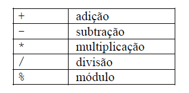 de stringsSó há um operador exclusivo para strings:
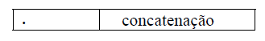 de atribuiçãoExiste um operador básico de atribuição e diversos derivados. Sempre retornam o valor atribuído. No caso dos operadores derivados de atribuição, a operação é feita entre os dois operandos, sendo atribuído o resultado para o primeiro. A atribuição é sempre por valor, e não por referência.
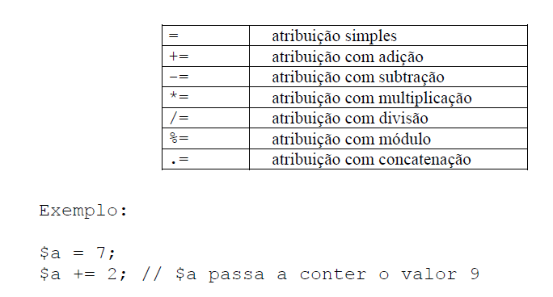 bit a bitComparam dois números bit a bit.
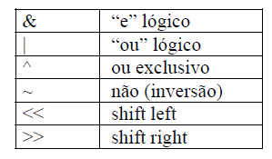 LógicosUtilizados para inteiros representando valores booleanos
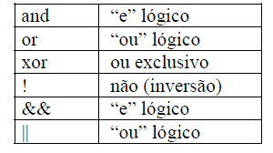Existem dois operadores para “e” e para “ou porque eles têm diferentes posições na ordem de precedência.
ComparaçãoAs comparações são feitas entre os valores contidos nas variáveis, e não as referências. Sempre retornam um valor booleano.
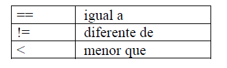 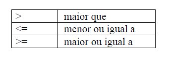 Expressão condicionalExiste um operador de seleção que é ternário. Funciona assim:
(expressao1)?(expressao2):( expressao3)
o interpretador PHP avalia a primeira expressão. Se ela for verdadeira, a expressão retorna o valor de expressão2. Senão, retorna o valor de expressão3.
de incremento e decremento 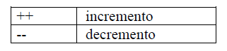Podem ser utilizados de duas formas: antes ou depois da variável. Quando utilizado antes, retorna o valor da variável antes de incrementá-la ou decrementá-la. Quando utilizado depois, retorna o valor da variável já incrementado ou decrementado.
Exemplos:
$a = $b = 10; // $a e $b recebem o valor 10
$c = $a++; // $c recebe 10 e $a passa a ter 11
$d = ++$b; // $d recebe 11, valor de $b já incrementado
Ordem de precedência dos operadoresA tabela a seguir mostra a ordem de precedência dos operadores no momento de avaliar as expressões;
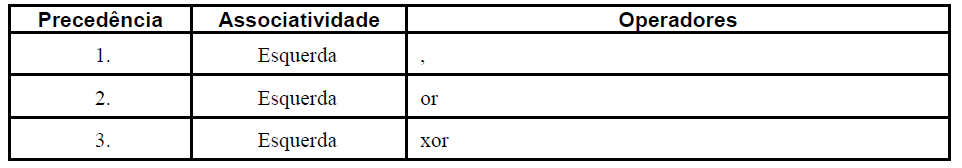 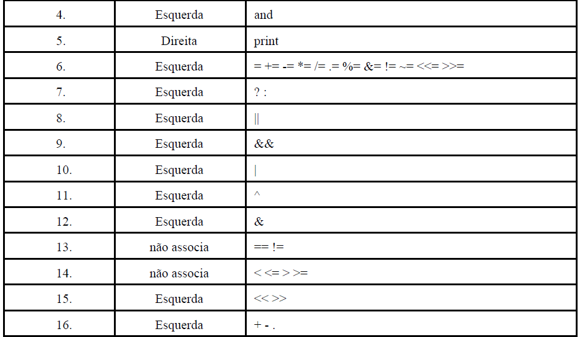 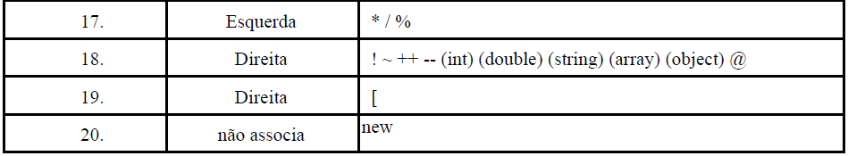